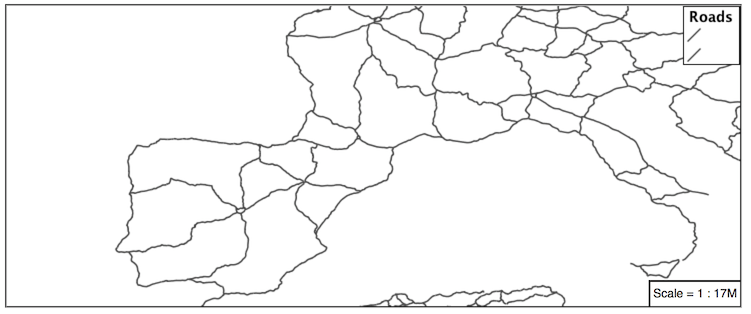

4.2. Lines¶
We will start our tour of YSLD styling by looking at the representation of lines.

LineString Geometry¶
Review of line symbology:
Lines can be used to represent either abstract concepts with length but not width such as networks and boundaries, or long thin features with a width that is too small to represent on the map. This means that the visual width of line symbols do not normally change depending on scale.
Lines are recorded as LineStrings or Curves depending on the geometry model used.
SLD uses a LineSymbolizer to record how the shape of a line is drawn. The primary characteristic documented is the Stroke used to draw each segment between vertices.
Labeling of line work is anchored to the mid-point of the line. GeoServer provides a vendor option to allow label rotation aligned with line segments.
For our exercises we are going to be using simple YSLD documents, often consisting of a single rule, in order to focus on the properties used for line symbology.
Each exercise makes use of the ne:roads layer.
Reference:
YSLD Reference Line symbolizer (User Manual | YSLD Reference)
LineString (User Manual | SLD Reference )
4.2.1. Line¶
A line symbolizer is represented by a line key. You can make a completely default symbolizer by giving it an empty map
line:

Basic Stroke Properties¶
Navigate to the Styles page.
Click Add a new style and choose the following:
New style name:
line_example
Workspace for new layer:
Leave blank
Format:
YSLD
Choose line from the
Generate a default styledropdown and click generate.The style editor should look like below:
title: dark yellow line symbolizers: - line: stroke-width: 1.0 stroke-color: '#99cc00'
Note
The title and value for stroke-color may be different.
Click Apply
Click Layer Preview to see your new style applied to a layer.
You can use this tab to follow along as the style is edited, it will refresh each time Apply is pressed.

You can see the equivalent SLD by requesting http://localhost:8080/geoserver/rest/styles/line_example.sld?pretty=true which will currently show the default line symbolizer we created.
<?xml version="1.0" encoding="UTF-8"?><sld:StyledLayerDescriptor xmlns="http://www.opengis.net/sld" xmlns:sld="http://www.opengis.net/sld" xmlns:gml="http://www.opengis.net/gml" xmlns:ogc="http://www.opengis.net/ogc" version="1.0.0"> <sld:NamedLayer> <sld:Name>line_example</sld:Name> <sld:UserStyle> <sld:Name>line_example</sld:Name> <sld:Title>dark yellow line</sld:Title> <sld:FeatureTypeStyle> <sld:Name>name</sld:Name> <sld:Rule> <sld:LineSymbolizer> <sld:Stroke> <sld:CssParameter name="stroke">#99CC00</sld:CssParameter> </sld:Stroke> </sld:LineSymbolizer> </sld:Rule> </sld:FeatureTypeStyle> </sld:UserStyle> </sld:NamedLayer> </sld:StyledLayerDescriptor>
We only specified the line symbolizer, so all of the boilerplate arround was generated for us.
Additional properties can be used fine-tune appearance. Use stroke-color to specify the colour of the line.
line: stroke-color: blue
stroke-width lets us make the line wider
line: stroke-color: blue stroke-width: 2px
stroke-dasharray applies a dot dash pattern.
line: stroke-color: blue stroke-width: 2px stroke-dasharray: 5 2
Check the Layer Preview tab to preview the result.

Note
The GeoServer rendering engine is quite sophisticated and allows the use of units of measure (such as m or ft). While we are using pixels in this example, real world units will be converted using the current scale, allowing for lines that change width with the scale.
4.2.2. Multiple Symbolizers¶
Providing two strokes is often used to provide a contrasting edge (called casing) to thick lines. This can be created using two symbolizers.
Start by filling in a bit of boilerplate that we’ll be using
feature-styles: - rules: - symbolizers: - line: stroke-color: '#8080E6' stroke-width: 3px
The line symbolizer is inside a rule, which is inside a feature style.
Add a second symbolizer to the rule
feature-styles: - rules: - symbolizers: - line: stroke-color: black stroke-width: 5px - line: stroke-color: '#8080E6' stroke-width: 3px
The wider black line is first so it is drawn first, then the thinner blue line drawn second and so over top of the black line. This is called the painter’s algorithm.
If you look carefully you can see a problem with our initial attempt. The junctions of each line show that the casing outlines each line individually, making the lines appear randomly overlapped. Ideally we would like to control this process, only making use of this effect for overpasses.

This is becaue the black and blue symbolizers are being drawn on a feature by feature basis. For nice line casing, we want all of the black symbols, and then all of the blue symbols.
Create a new feature style and move the second symbolizer there.
feature-styles: - rules: - symbolizers: - line: stroke-color: black stroke-width: 5px - rules: - symbolizers: - line: stroke-color: '#8080E6' stroke-width: 3px
Again we are using painter’s algorithm order: the first feature style is drawn first then the second so the the second is drawn on top of the first. The difference is that for each feature style, all of the features are drawn before the next feature style is drawn.
If you look carefully you can see the difference.
By using feature styles we have been able to simulate line casing.

4.2.3. Label¶
Our next example is significant as it introduces how text labels are generated.
Use of Label Property¶
This is also our first example making use of a dynamic style (where a value comes from an attribute from your data).
To enable LineString labeling we add a text symbolizer witrh a label.
Update
line_examplewith the following:symbolizers: - line: stroke-color: blue stroke-width: 1px - text: label: ${name}
The SLD standard documents the default label position for each kind of Geometry. For LineStrings the initial label is positioned on the midway point of the line.

We have used an expression to calculate a property value for label. The label is generated dynamically from the name attribute. Expressions are supplied within curly braces preceded with a dollar sign, and use Extended Constraint Query Language (ECQL) syntax.
symbolizers: - line: stroke-color: blue stroke-width: 1px - text: label: ${name}
Additional keys can be supplied to fine-tune label presentation:
symbolizers: - line: stroke-color: blue stroke-width: 1px - text: label: ${name} fill-color: black placement: line offset: 7px
The fill-color property is set to black to provide the colour of the text.
symbolizers: - line: stroke-color: blue stroke-width: 1px - text: label: ${name} fill-color: black placement: line offset: 7px
The placement property is used to set how the label is placed with respect to the line. By default it is point which casues the label to be placed next to the midpoint as it would be for a point feature. When set to line it is placed along the line instead. offset specifies how far from the line the label should be placed.
symbolizers: - line: stroke-color: blue stroke-width: 1px - text: label: ${name} fill-color: black placement: line offset: 7px

When using point placement, you can shift the position of the label using displacement instead of offset. This takes an x value and a y value.
symbolizers: - line: stroke-color: blue stroke-width: 1px - text: label: ${name} fill-color: black displacement: [5px, -10px]
4.2.4. How Labeling Works¶
The rendering engine collects all the generated labels during the rendering of each layer. Then, during labeling, the engine sorts through the labels performing collision avoidance (to prevent labels overlapping). Finally the rendering engine draws the labels on top of the map. Even with collision avoidance you can spot areas where labels are so closely spaced that the result is hard to read.
The parameters provided by SLD are general purpose and should be compatible with any rendering engine.
To take greater control over the GeoServer rendering engine we can use “vendor specific” parameters. These hints are used specifically for the GeoServer rendering engine and will be ignored by other systems. In YSLD vendor specific parameters start with the prefix x-.
The ability to take control of the labeling process is exactly the kind of hint a vendor specific parameter is intended for.
Update
line_examplewith the following:symbolizers: - line: stroke-color: blue stroke-width: 1px - text: label: ${name} fill-color: black placement: line offset: 7px x-label-padding: 10
The parameter x-label-padding provides additional space around our label for use in collision avoidance.
symbolizers: - line: stroke-color: blue stroke-width: 1px - text: label: ${name} fill-color: black placement: line offset: 7px x-label-padding: 10
Each label is now separated from its neighbor, improving legibility.

4.2.5. Scale¶
This section explores the use of rules with filters and scale restrictions.
Replace the line_example YSLD definition with:
rules: - filter: ${scalerank < 4} symbolizers: - line: stroke-color: black stroke-width: 1
And use the Layer Preview tab to preview the result.

The scalerank attribute is provided by the Natural Earth dataset to allow control of the level of detail based on scale. Our filter short-listed all content with scalerank 4 or lower, providing a nice quick preview when we are zoomed out.
In addition to testing feature attributes, selectors can also be used to check the state of the rendering engine.
Replace your YSLD with the following:
rules: - scale: [35000000, max] symbolizers: - line: stroke-color: black stroke-width: 1 - scale: [min, 35000000] symbolizers: - line: stroke-color: blue stroke-width: 1
As you adjust the scale in the Layer Preview (using the mouse scroll wheel) the color will change between black and blue. You can read the current scale in the bottom right corner, and the legend will change to reflect the current style.

Putting these two ideas together allows control of level detail based on scale:
define: &primaryStyle stroke-color: black define: &primaryFilter ${scalerank <= 4} define: &secondaryStyle stroke-color: '#000055' define: &secondaryFilter ${scalerank = 5} rules: - else: true scale: [min, 9000000] symbolizers: - line: stroke-color: '#888888' stroke-width: 1 - filter: ${scalerank = 7} scale: [min, 17000000] symbolizers: - line: stroke-color: '#777777' stroke-width: 1 - filter: ${scalerank = 6} scale: [min, 35000000] symbolizers: - line: stroke-color: '#444444' stroke-width: 1 - filter: *secondaryFilter scale: [9000000, 70000000] symbolizers: - line: <<: *secondaryStyle stroke-width: 1 - filter: *secondaryFilter scale: [min, 9000000] symbolizers: - line: <<: *secondaryStyle stroke-width: 2 - filter: *primaryFilter scale: [35000000, max] symbolizers: - line: <<: *primaryStyle stroke-width: 1 - filter: *primaryFilter scale: [9000000, 35000000] symbolizers: - line: <<: *primaryStyle stroke-width: 2 - filter: *primaryFilter scale: [min, 9000000] symbolizers: - line: <<: *primaryStyle stroke-width: 4
When a rule has both a filter and a scale, it will trigger when both are true.
The first rule has else: true instead of a filter. This causes it to be applied after all other rules have been checked if none of them worked.
Since there are some things we need to specify more than once like the colour and filter for primary and secondary roads, even as they change size at different scales, they are given names with define so they can be reused. The filters are inserted inline using *name while the style is inserted as a block with <<: *name

4.2.6. Bonus¶
Finished early? Here are some opportunities to explore what we have learned, and extra challenges requiring creativity and research.
In a classroom setting please divide the challenges between teams (this allows us to work through all the material in the time available).
4.2.6.1. Explore Vendor Option Follow Line¶
Vendor options can be used to enable some quite spectacular effects, while still providing a style that can be used by other applications.
Update line_example with the following:
symbolizers: - line: stroke-color: '#EDEDFF' stroke-width: 10 - text: label: '${level} #${name}' fill-color: '#000000' x-followLine: true
The # character is the comment character in YAML, so we have to quote strings that contain it like colours and in this expression.
The property stroke-width has been used to make our line thicker in order to provide a backdrop for our label.
symbolizers: - line: stroke-color: '#EDEDFF' stroke-width: 10 - text: label: '${level} #${name}' fill-color: '#000000' placement: point x-followLine: true
The label property combine several CQL expressions together for a longer label.
symbolizers: - line: stroke-color: '#EDEDFF' stroke-width: 10 - text: label: '${level} #${name}' fill-color: '#000000' x-followLine: true
The expressions in the label property:
${level} #${name}are inserted into the text by combining them with the text between them using Concatenate function:
[Concatenate(level,' #', name)]
This happens silently in the background.
The property x-followLine provides the ability of have a label exactly follow a LineString character by character.
symbolizers: - line: stroke-color: '#EDEDFF' stroke-width: 10 - text: label: ${level} ${name} fill-color: '#000000' x-followLine: true
The result is a new appearance for our roads.
4.2.6.2. Challenge Classification¶
The roads type attribute provides classification information.
You can Layer Preview to inspect features to determine available values for type.
Challenge: Create a new style adjust road appearance based on type.

note:: The available values are ‘Major Highway’,’Secondary Highway’,’Road’ and ‘Unknown’.
note:: Answer provided at the end of the workbook.
4.2.6.3. Challenge One Rule Classification¶
You can save a lot of typing by doing your classification in an expression using arithmetic or the Recode function
Challenge: Create a new style and classify the roads based on their scale rank using expressions in a single rule instead of multiple rules with filters.
Note
Answer provided at the end of the workbook.
4.2.6.4. Challenge Label Shields¶
The traditional presentation of roads in the US is the use of a shield symbol, with the road number marked on top.
Challenge: Have a look at the documentation for putting a graphic on a text symbolizer in SLD and reproduce this technique in YSLD.
Note
Answer provided at the end of the workbook.